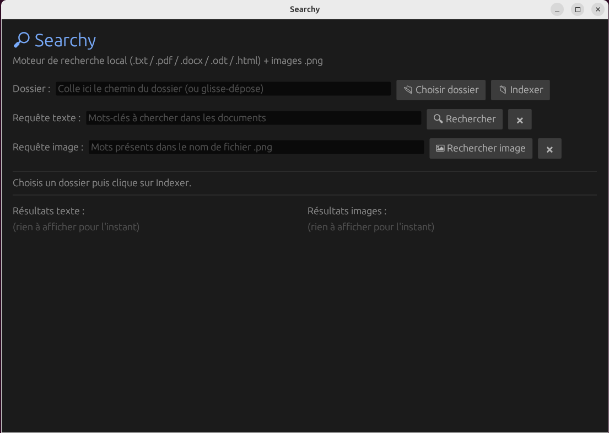
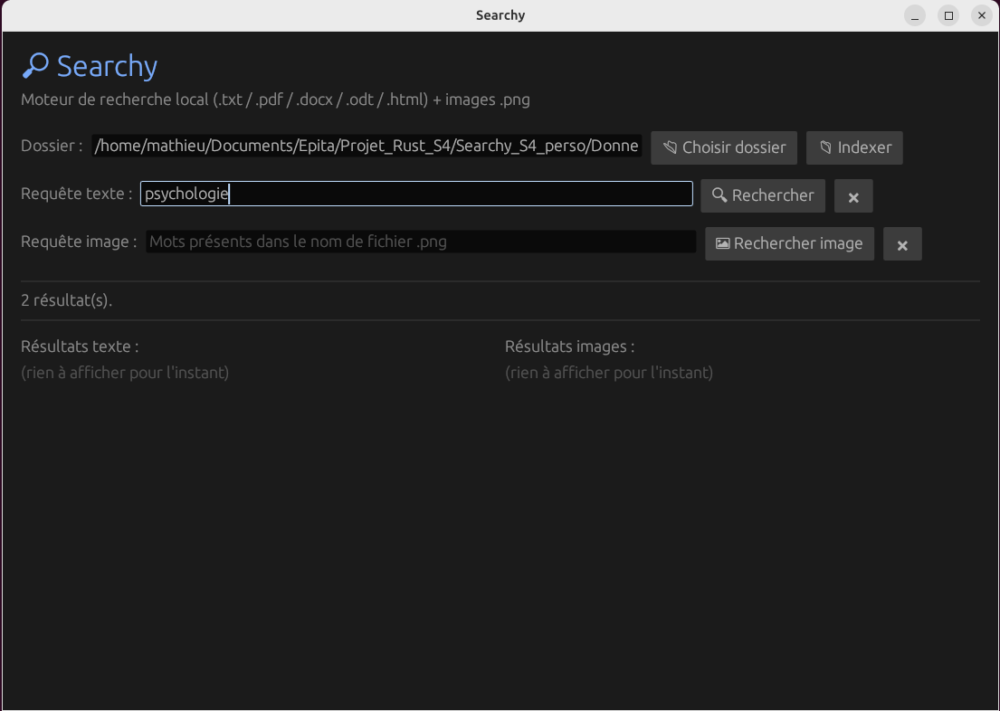
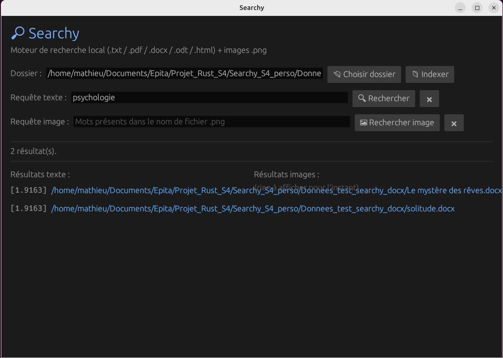

Guide d'utilisation
Documentation de Searchy
Cette page présente comment utiliser Searchy : lancer le moteur, effectuer une recherche et interpréter les résultats.
1. Lancer l'application
Depuis la racine du projet, compilez et lancez Searchy avec Cargo :
cargo run --releaseL'interface s'ouvre avec les champs vides. Aucun dossier n'est encore sélectionné et aucun résultat n'est affiché.

2. Choisir un dossier et lancer une recherche
Cliquez sur Choisir dossier puis sur Indexer. Entrez ensuite vos mots-clés dans le champ Requête texte et cliquez sur Rechercher.

3. Lire les résultats
Chaque résultat affiche le chemin du fichier et son score de pertinence entre crochets. Plus le score est élevé, plus le document correspond à la requête. Cliquez sur un lien pour ouvrir le fichier directement.
